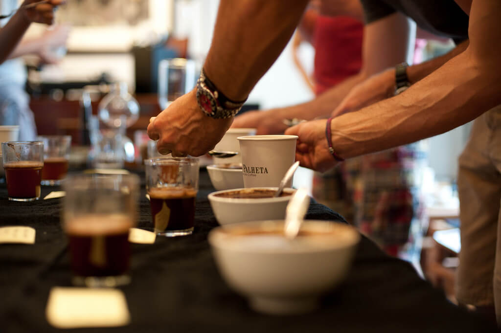

Making sense of the SCAA’s new Flavor Wheel
Sat, Dec 17, 2016
Read in 2 minutes
The Coffee Taster’s Flavor Wheel, the official resource used by coffee tasters, has been revised for the first time this year.
The SCAA updated the wheel to reflect the finer nuances needed to describe flavors more precisely. The new descriptions are more detailed and hence allow cuppers to distinguish between more flavors.
While this is going to be a big change for professional coffee tasters, it means a lot to you as a consumer as well. We’ll explain how the wheel came to be, how pros use it and what the flavors actually mean.
What the updates mean to you
The Specialty Coffee Association of America (SCAA), founded in 1982, is a non-profit trade organization for the specialty coffee industry. With members located in more than 40 countries, SCAA represents every segment of the specialty coffee industry, including:
- *producers
- *roasters
- *importers/exporters
- *retailers
- *manufacturers
- *baristas
For over 30 years, SCAA has been dedicated to creating a vibrant specialty coffee community by recognizing, developing and promoting specialty coffee. SCAA sets and maintains quality standards for the industry, conducts market research, and provides education, training, resources, and business services for its members.
Coffee cupping, or coffee tasting, is the practice of observing the tastes and aromas of brewed coffee. It is a professional practice but can be done informally by anyone or by professionals known as “Q Graders”. A standard coffee cupping procedure involves deeply sniffing the coffee, then loudly slurping the coffee so it spreads to the back of the tongue.
The coffee taster attempts to measure aspects of the coffee’s taste, specifically the body (the texture or mouthfeel, such as oiliness), sweetness, acidity (a sharp and tangy feeling, like when biting into an orange), flavour (the characters in the cup), and aftertaste. Since coffee beans embody telltale flavours from the region where they were grown, cuppers may attempt to identify the coffee’s origin.